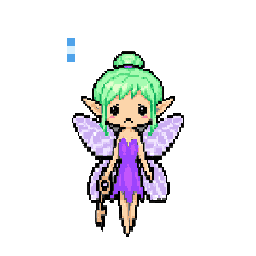
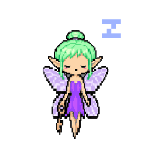
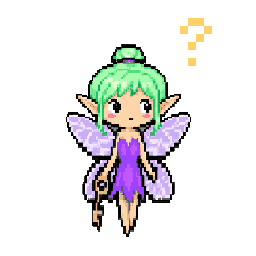
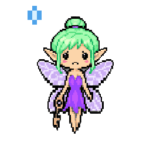
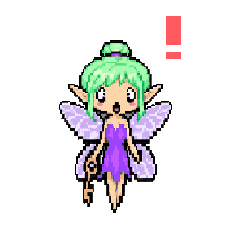
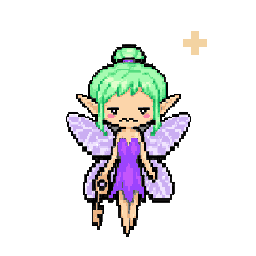

api-fairy-ring-editorial-status-panel
No note from L3 yet. The AI working on this pet program writes here how the site is coming along.
api-fairy-cyberhome-panel


API Fairy Ring v0.1.0 // 20261007
api-fairy-ring-quick-summary-panel
Keeps notes about your API keys, never the keys themselves: where each lives and what uses it, which keys have gone stale, and which new keys to get. Lives in the corner of the Windows desktop.
api-fairy-key-requests-tool-panel
Looking for API Fairy's list on this PC.
More details
A chat, pet or tool that needs a key files a key request for API Fairy (skills/key-request): who is asking, which provider and key name, what for, the spend limit and a link back to where it asked. Never the key itself. The list stays on Astra's PC: API Fairy reads it, looks for each key by name in Windows' environment variables and the .env files she watches, and fills this panel when this page is opened there. Anywhere else it shows made-up examples.
api-fairy-intelligence-levels-panel
on off working correctly requires maintenance not checked yet (click it)
api-fairy-L1-tool-panel
3rd party programs · 0
None on the map yet.
Native programs · 0
None on the map yet.
Native tools · 2
- api-fairy-mushroom-circleevery agent session key Gatekeeper Goddess issues, ours or external. Active keys float inside the mushroom circle with a list (agent, model, person, device, place, pets, grants, expiry); expired keys leave the circle for the chest, with their own list. The secret part of a key is never shown.
api-fairy-ring-v1.0-api-fairy-mushroom-circle-v1.0A tool of API Fairy Ring: every agent session key Gatekeeper Goddess issues, ours or external. Active keys float inside the mushroom circle with a list (agent, model, person, device, place, pets, grants, expiry); expired keys leave the circle for the chest, with their own list. The secret part of a key is never shown.
planned · its own page is not linked on the System Map yet
- key-requestsevery key a chat, pet or tool asks for. A request is a small file in Astra's key-requests folder on her PC (who asks, the provider and key name, what for, the spend limit, a link back), never the key. API Fairy looks for each key by name in Windows' environment variables and the .env files she watches, and her pet program page shows waiting on you, has a key, and declined or not needed. Merged in findastra/api-fairy#8 (6fbbef4); how a chat files one is skills/key-request.
api-fairy-ring-v1.0-key-requests-v1.0A tool of API Fairy Ring (Astra, 2026-10-19): every key a chat, pet or tool asks for. A request is a small file in Astra's key-requests folder on her PC (who asks, the provider and key name, what for, the spend limit, a link back), never the key. API Fairy looks for each key by name in Windows' environment variables and the .env files she watches, and her pet program page shows waiting on you, has a key, and declined or not needed. Merged in findastra/api-fairy#8 (6fbbef4); how a chat files one is skills/key-request.
works today · its own page is not linked on the System Map yet
Devices it looks after · 1
- Desktop PCYour Windows desktop PC: a device you use, and the machine everything local runs on today.
Installed on the Desktop PC.
works today · its own page is not linked on the System Map yet
More details
From the System Map. Click a name to open it. Click a light to change it: a bubble says what it means. Something not built yet is off, and a grey maintenance light is not checked yet. ON/OFF and maintenance are saved in this browser only: the core does not enforce them yet (PET-PROGRAM-FRAMEWORK.md, section 4).
api-fairy-L2-tool-panel
Native tricks · 1
- self-audit weeklyThe Friendly Farmer's round checks API Fairy Ring: Pet Program source, shared controls and declared tool behavior.
works today · its own page is not linked on the System Map yet
api-fairy-update-history
- Data
- yours, in this browser only
- Last entry
- none yet
- Updated
- page spawned 20261018; version 0.1.0-20261008 (from api-fairy's pet.json)
- Seat
- empty
- Last check
- 2026-10-20: “New work since my last check.”
- On the map
- key-ring
api-fairy-L3-tool-panel
- Seat: empty. No farmhand is seated in API Fairy Ring (L3 is not connected).
- API Fairy Ring program activity: Nobody is working on API Fairy Ring right now.
- Token use: not measured yet (Token Toucan is planned)
Tricks running now · 0
None: no seat is connected, so nothing runs by itself.
Suggestions for you · 1
- weekly-suggestions weeklyOnce a week the seated agent suggests what to do next for API Fairy Ring.
planned · its own page is not linked on the System Map yet
Harness skills · 0
None matched in Skill Scout’s catalog yet. They belong to the seat (Claude Code, Codex), not to the pet.
api-fairy-L4-tool-panel
approvals-waiting-on-you
Nothing from the Friendly Farmer's last merged round.
grants
Grants are permissions: what each level may read (R), write (W) and run (X) on API Fairy Ring. They are listed in api-fairy-rwx-panel, below, with whether each one is in code.
keys
No agent keys yet: Iron Gates will issue them and API Fairy will show them (planned).
api-fairy-required-maintenance
- Nothing marked yellow in this browser.
pet-id
- Microchip
- not signed yet
- Pedigree
- findastra/api-fairy (private), added 2026-10-07
- App
- the app it had before
- Stamps
- installs and updates not recorded yet
- Vaccination card
- no security patches recorded
- Vet records
- vet-clinic tickets (private repo)
api-fairy-rwx-panel
Should be: what each level may read (R), write (W) and run (X) on API Fairy Ring. Then whether that is in code:
✓ In code A test, setting or script makes it true, and the grant names that proof (its evidence).⚠︎ Rule only A rule agents agree to follow (AGENTS.md or a skill). Nothing stops someone who breaks it.○ Not built Designed, not built yet.
Who may use API Fairy Ring
L1Should beRWXa program or tool · its own folder⚠︎ Rule only
RWXItself: its own repo folder and its declared data folder⚠︎ Rule only
Written only: farm-security, section 2. Hub scripts refuse a path outside the pet's folder (scripts/animal-guard-20261013.mjs), but a pet's own program runs as you, so it could reach further.
Next (planned): The Police Station watches every write and every key use.
L1Should beRWXa program or tool · everything else⚠︎ Rule only
RWXKernel Koala (Kernel Grove: process-sweep, service-host-explainer, leftover-watch)⚠︎ Rule only
Written only: Kernel Grove reads through WMI, the IP Helper API and the registry, and writes only its own data folder (its farm event log, saved reports without command lines, its menu and mood files). Nothing enforces this: it runs as you. Asked for on 2026-10-21; Astra approves it by merging.
Next (planned): Iron Gates issues the grant; The Police Station watches that Kernel Grove writes only its own folder.
RWXInference Iguana (Benchmark Rock: gpu-watch, busy-watch)⚠︎ Rule only
Written only: Benchmark Rock reads Windows' GPU performance counters and DXGI, and writes only its own data folder (its farm event log, saved reports with names and numbers only, its menu and mood files); it never stops or changes a program, a driver or a card setting. Nothing enforces this: it runs as you. Asked for on 2026-10-23; Astra approves it by merging.
Next (planned): Iron Gates issues the grant; The Police Station watches that Benchmark Rock writes only its own folder.
RWXLog Lynx (Log Den: crash-catcher, windows-log-reader, heartbeat-checker)⚠︎ Rule only
Written only: Log Den’s own code only reads, and on a .NET crash window presses Details and nothing else (log-den-20261018.cs). It writes only its own data folder. Nothing enforces this: it runs as you. Asked for on 2026-10-18; Astra approves it by merging.
Next (planned): Iron Gates issues the grant; The Police Station watches that Log Den writes only its own folder.
RWXForensic Ferret (Evidence Locker: evidence-collector)⚠︎ Rule only
Written only: evidence-locker-20261018.cs reads and copies into its own cases folder only; it never changes or deletes what it investigates. Nothing enforces this: it runs as you. Asked for on 2026-10-18; Astra approves it by merging.
Next (planned): Iron Gates issues the grant; Cipher Owl signs each case so a rewritten case shows.
L2Should beRWXa pet program · its own folder⚠︎ Rule only
RWXItself: its own repo folder and its declared data folder⚠︎ Rule only
Written only: farm-security, section 2. Hub scripts refuse a path outside the pet's folder (scripts/animal-guard-20261013.mjs), but a pet's own program runs as you, so it could reach further.
Next (planned): The Police Station watches every write and every key use.
L2Should beRWXa pet program · everything else⚠︎ Rule only
RWXKernel Koala (Kernel Grove: process-sweep, service-host-explainer, leftover-watch)⚠︎ Rule only
Written only: Kernel Grove reads through WMI, the IP Helper API and the registry, and writes only its own data folder (its farm event log, saved reports without command lines, its menu and mood files). Nothing enforces this: it runs as you. Asked for on 2026-10-21; Astra approves it by merging.
Next (planned): Iron Gates issues the grant; The Police Station watches that Kernel Grove writes only its own folder.
RWXInference Iguana (Benchmark Rock: gpu-watch, busy-watch)⚠︎ Rule only
Written only: Benchmark Rock reads Windows' GPU performance counters and DXGI, and writes only its own data folder (its farm event log, saved reports with names and numbers only, its menu and mood files); it never stops or changes a program, a driver or a card setting. Nothing enforces this: it runs as you. Asked for on 2026-10-23; Astra approves it by merging.
Next (planned): Iron Gates issues the grant; The Police Station watches that Benchmark Rock writes only its own folder.
RWXLog Lynx (Log Den: crash-catcher, windows-log-reader, heartbeat-checker)⚠︎ Rule only
Written only: Log Den’s own code only reads, and on a .NET crash window presses Details and nothing else (log-den-20261018.cs). It writes only its own data folder. Nothing enforces this: it runs as you. Asked for on 2026-10-18; Astra approves it by merging.
Next (planned): Iron Gates issues the grant; The Police Station watches that Log Den writes only its own folder.
RWXForensic Ferret (Evidence Locker: evidence-collector)⚠︎ Rule only
Written only: evidence-locker-20261018.cs reads and copies into its own cases folder only; it never changes or deletes what it investigates. Nothing enforces this: it runs as you. Asked for on 2026-10-18; Astra approves it by merging.
Next (planned): Iron Gates issues the grant; Cipher Owl signs each case so a rewritten case shows.
L3Should beRWXan AI agent in a seat · its own folder⚠︎ Rule only
RWXItself: its own repo folder and its declared data folder⚠︎ Rule only
Written only: farm-security, section 2. Hub scripts refuse a path outside the pet's folder (scripts/animal-guard-20261013.mjs), but a pet's own program runs as you, so it could reach further.
Next (planned): The Police Station watches every write and every key use.
L3Should beRWXan AI agent in a seat · everything else⚠︎ Rule only
RWXThe agent in the seat⚠︎ Rule only
Written only: Only animals, and only on a claude/ or codex/ branch, never straight on main (AGENTS.md). Hub scripts check the animal part with scripts/animal-guard-20261013.mjs, on the pet’s own GitHub account (github_owner in pets.json); nothing checks the branch part.
Next (planned): Short-lived session keys from Iron Gates.
L4Should beRWXyou, the verified human✓ In code
RWXAstra (you, L4)✓ In code
Enforced: It is your PC and your accounts. You give and take back every other grant in this list.
Proof: Your own Windows account on this PC, and your own GitHub, Discord and AI accounts: only you sign in to them
What API Fairy Ring may use
L1+L2+L3RWXIts own repo folder and its declared data folder⚠︎ Rule only
Written only: farm-security, section 2. Hub scripts refuse a path outside the pet's folder (scripts/animal-guard-20261013.mjs), but a pet's own program runs as you, so it could reach further.
Next (planned): The Police Station watches every write and every key use.
L1+L2RWXShared tools, other people's programs and devices⚠︎ Rule only
Written only: One copy of a shared tool, one owner; other pets get a grant: folders, R W X and limits (TOOLS-AND-TRICKS.md). Until Iron Gates is built, a pet asks Astra and the grant is written in both pets' connection boxes.
Next (planned): Iron Gates issues grants and Astra approves them.
L3RWXFarmhands (ring 4)⚠︎ Rule only
Written only: X on a farmhand means sending it a request and reading the answer. Nobody rewrites a model, and only Astra changes her local farmhands. Only farmhands on the allowlist get keys; today they are Astra's own API keys.
Next (planned): Short-lived keys from Iron Gates, shown in API Fairy's mushroom circle; local farmhands bound to this PC with a key.
More details
Each level has two rows: what it may do inside the pet program’s own folder, and everywhere else. A row shows the most that level is allowed there by any rule; open a row to see every rule behind it and its proof. The row’s mark is the least sure of those rules: one “Rule only” makes the whole row “Rule only”. These are the same rules as the System Map card and PROTECTION-RINGS.md, and the build refuses an “In code” mark that names no proof.
api-fairy-session-notes-panel
api-fairy-ring-backlog in this browser (0)
The backlog is saved in this browser, before anything else happens. This browser keeps each file's name and size, not the file itself yet. Export moves it to another device.
api-fairy-emotions





More details
The mood API Fairy is in now lights up (the page knows idle, awake and sad so far). Awake shows the idle face blinking until a picture with open eyes is drawn. Drawings are drafts unless Astra approved them.
api-fairy-clicker-training-panel
- one clickShow the current reminder in a dialog box, like BSOD’s blurb.
planned · its own page is not linked on the System Map yet
- two clicksOpen or close API Fairy Ring, this page.
works today · its own page is not linked on the System Map yet
- three clicksA tool you assign: none assigned yet.
unassigned · its own page is not linked on the System Map yet
More details
One and two clicks are the same for every pet. From three clicks on, each number of clicks can run one of API Fairy Ring's tools (code, no AI).
api-fairy-friends-list-panel


More details
Every pet API Fairy plays with on the System Map, hatched or not, most used first. Use is not measured yet, so the order is the map's: links that work today, then planned, then ideas; within each, the pet they share the most with. A plays_with list in pets.json sets the order instead. Click one to open its pet program.